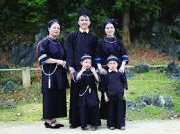

Chất liệu
Trang phục được làm từ vải bông, nhuộm chàm theo phương pháp truyền thống ,vải bông tự nhiên, nhuộm chàm xanh đen đặc trưng.
Dịp mặc
Người Tày mặc trang phục này trong sinh hoạt hằng ngày và lễ hội.Vào các dịp lễ Tết, đám cưới hay sự kiện, phụ nữ mặc áo dài chàm, váy/quần chàm, thắt lưng vải và trang sức bạc. Nam giới mặc áo năm thân, quần rộng màu chàm hoặc đen
Ý nghĩa
Trang phục thể hiện sự giản dị, kín đáo và nền nếp trong sinh hoạt và biểu trưng cho bản sắc dân tộc, sự hài hòa với thiên nhiên và tình yêu quê hương